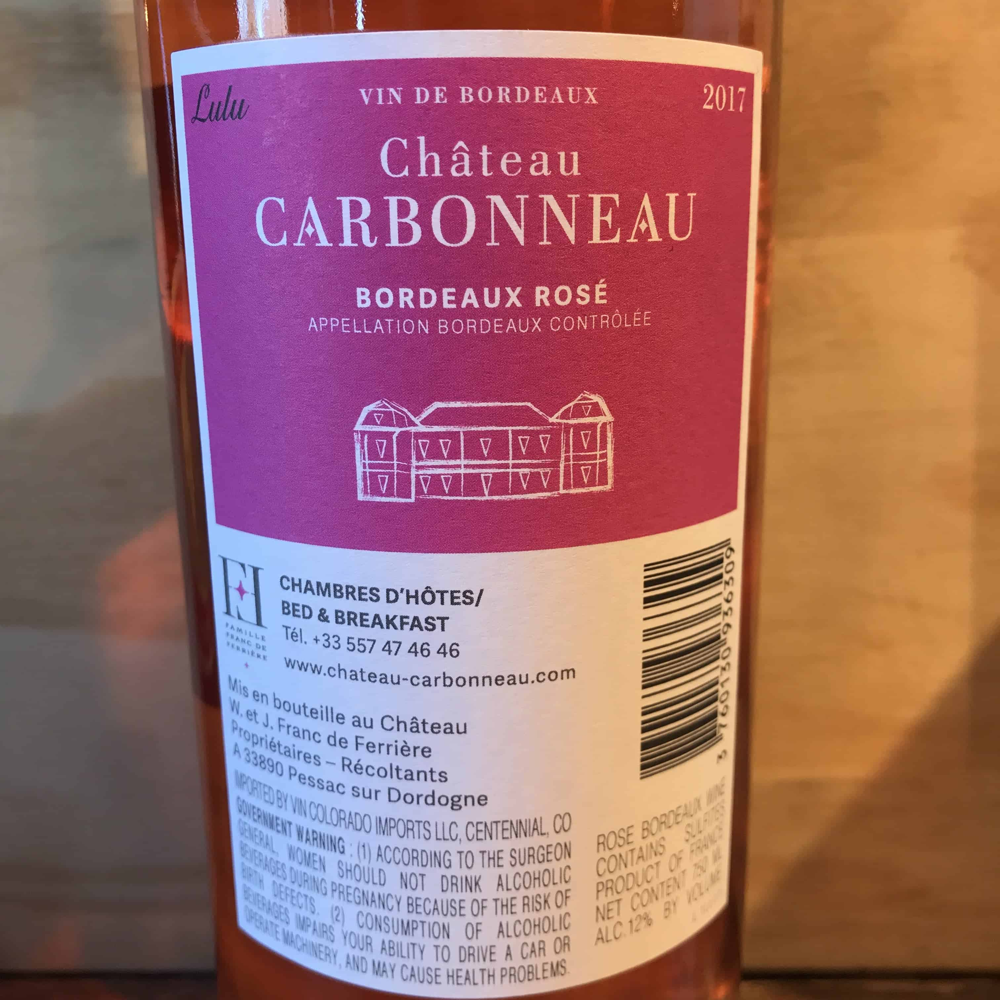
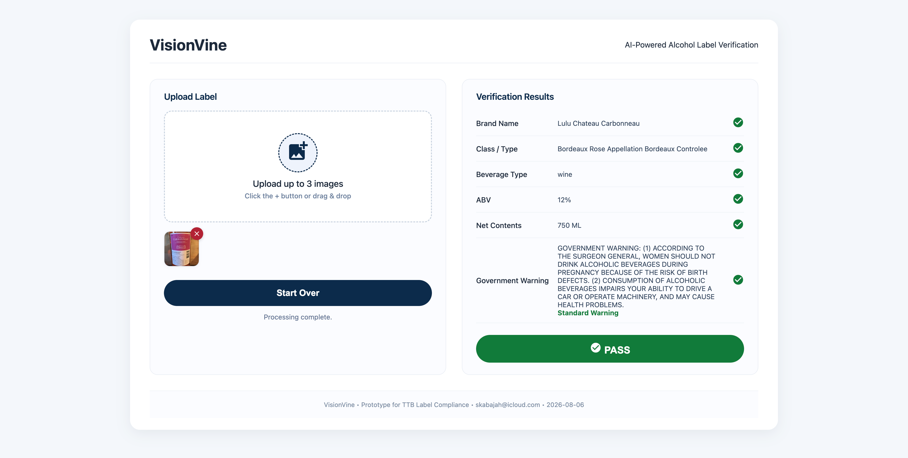
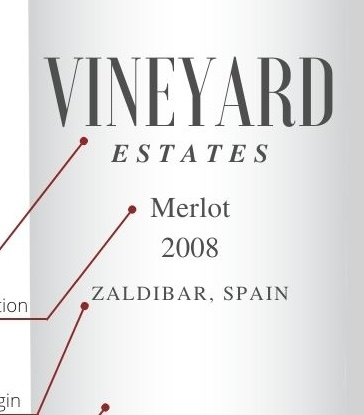
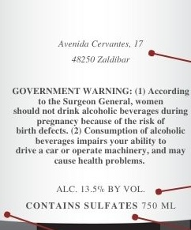
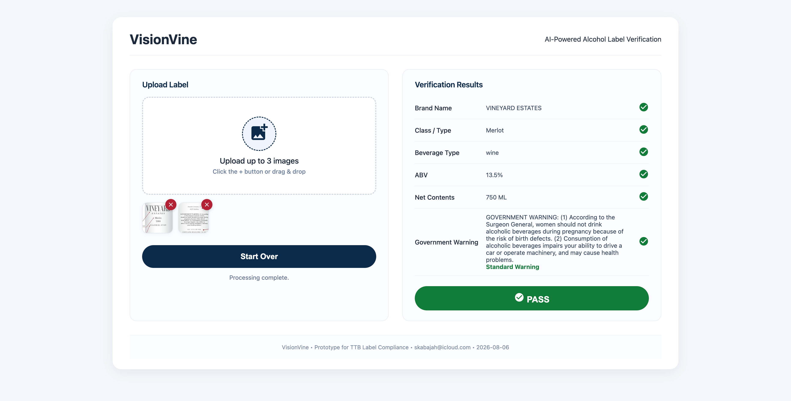
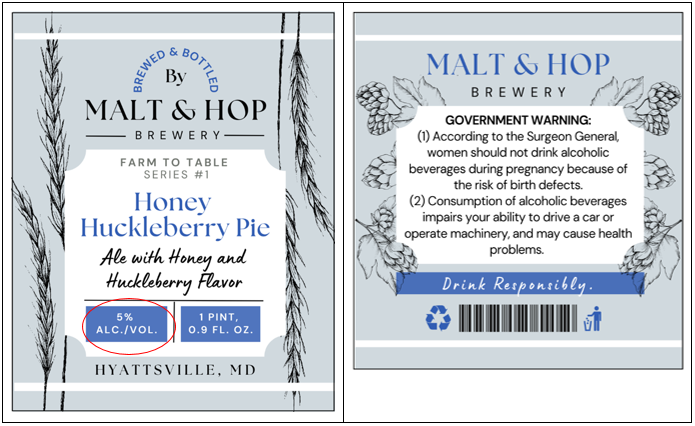
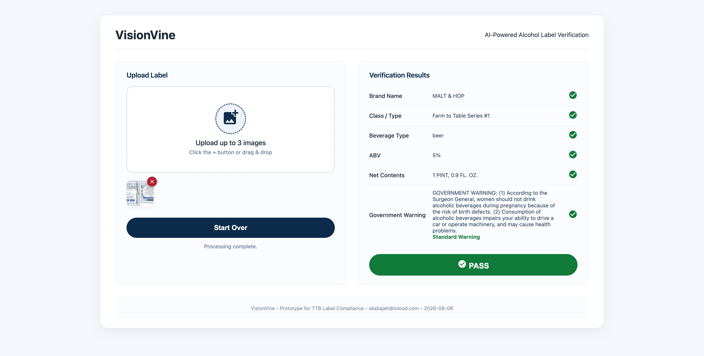

VisionVine
VisionVine
AI-Powered Alcohol Label Verification
AI-Powered Alcohol Label Verification
Author: Shadi Kabajah
Email: skabajah@icloud.com
Date: August 9, 2026
Live Demo: https://visionvine.onrender.com
VisionVine is a web application that uses AI (Groq’s Qwen 3.6-27b vision model) to extract and validate information from alcohol beverage labels. It is designed to assist TTB compliance agents in verifying that labels meet regulatory requirements, reducing manual review time from minutes to seconds.
The screenshots/ folder contains example results and test label images you can download and use to test the app.
| File | Description |
|---|---|
result-1.png |
PASS result — single label image |
result-2.png |
PASS result — two separate images (front + back) |
result-3.png |
PASS result — one image containing two labels (combined) |
sample_1.jpg |
Sample label image 1 (distilled spirits) |
sample_2a.jpg |
Sample label image 2a (front label) |
sample_2b.jpg |
Sample label image 2b (back label) |
sample_3.png |
Combined label image (front + back in one) |
Click any image to expand (opens in new tab).
| Input | Output |
|---|---|
|
 Single label image |
 ✅ PASS — single label |
|
  Two separate images (front + back) |
 ✅ PASS — two images |
|
 One image containing two labels (combined) |
 ✅ PASS — combined label |
| Component | Technology | Homepage |
|---|---|---|
| Backend | Python + FastAPI | fastapi.tiangolo.com |
| AI / OCR | Groq API (Qwen 3.6-27b) | console.groq.com |
| Icons | Google Material Icons | fonts.google.com/icons |
| Frontend | HTML + CSS + JavaScript | — |
| Hosting | Render | render.com |
| Source Management | GitHub | github.com |
Free Tier Notes:
visionvine/ ├── main.py ├── requirements.txt ├── screenshots/ │ ├── result-1.png │ ├── result-2.png │ ├── result-3.png │ ├── sample_1.jpg │ ├── sample_2a.jpg │ ├── sample_2b.jpg │ └── sample_3.png ├── static/ │ ├── index.html │ ├── app.js │ ├── cleaner.js │ ├── style.css │ └── icon.svg └── README.md
Shadi Kabajah
skabajah@icloud.com
All Rights Reserved © Shadi Kabajah
 VisionVine · AI-Powered Alcohol Label Verification
VisionVine · AI-Powered Alcohol Label Verification